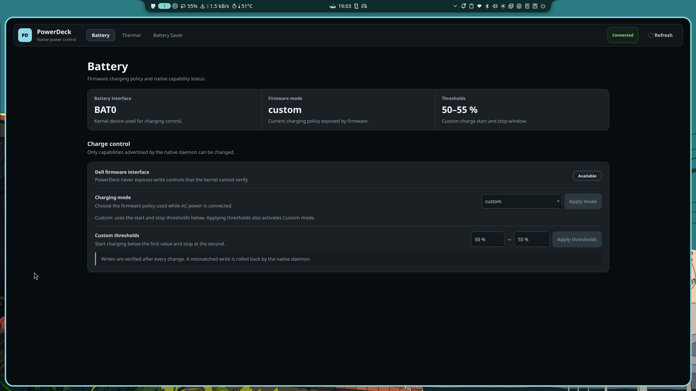

Battery
Dell charging modes, custom thresholds and verified writes with rollback.
- Express / Standard / Adaptive / Custom
- Validated start and stop thresholds
- Capability-gated by sysfs discovery
POWERDECK 2.x
PowerDeck keeps the hot path native: Rust services for system logic, a C++20 / Qt6 GUI for the desktop, and small verified interfaces to Linux power and thermal controls.
CURRENT UI
The real app keeps the GUI unprivileged and forwards privileged writes through the native system service.

FEATURES
PowerDeck exposes a control only when the daemon can discover, validate and verify the matching kernel or firmware interface.
Dell charging modes, custom thresholds and verified writes with rollback.
Firmware cooling profiles, CPU package power, GPU power and fan RPM.
A native user-level policy that coordinates display, CPU and device savings.
ARCHITECTURE
The GUI never runs as root. System writes go through Polkit, validation and hardware read-back.
C++20 / Qt6 GUI
|
| D-Bus
|
+-------------------------------+
| |
v v
Rust user agent Rust system daemon
powerdeck-agent powerdeckd
| |
| +-- charge control
| +-- thermal profile
| +-- CPU policy
| +-- telemetry
|
+-- Battery Saver automationWEB DEMO
This is a lightweight preview of the current layout. It does not talk to D-Bus or real hardware.
Firmware charging policy and native capability status.
Live power telemetry and firmware-managed cooling.
A native policy that coordinates display, CPU and device savings.
BUILD
The repository includes Arch packaging, but a public prebuilt package is not published yet.
sudo pacman -S --needed rust cmake ninja qt6-base gcc pkgconf polkitcd ~/Projects/PowerDeck
./native/scripts/native-check.sh